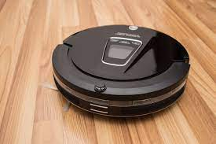
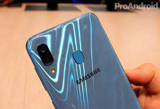
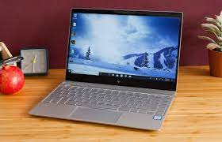
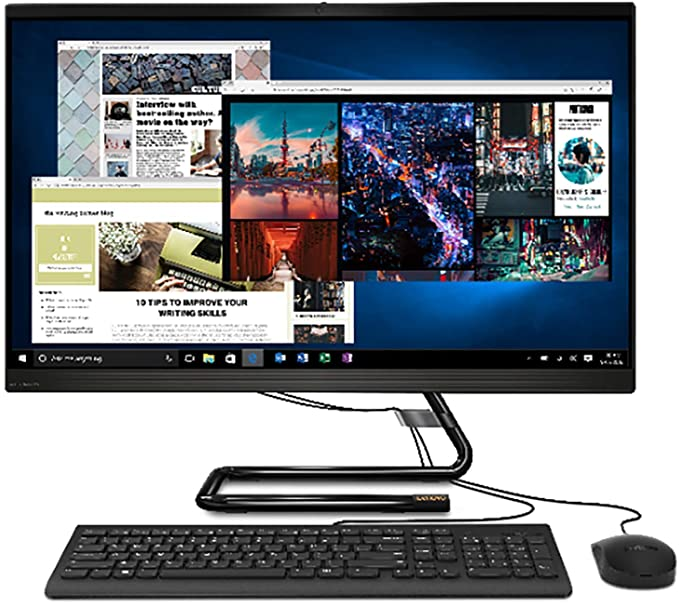

MI HISTORIA
ACERCA DE MI
CONTACTAME!
PRODUCTOS Y SERVICIOS
REGISTRESE QUERIDO CLIENTE
PRODUCTOS Y SERVICIOS
Servicios
Mano de Obra
Mantenimiento de computadoras
Reparación de computadoras
Configuración de redes
Reparación de cargadores para Laptops
Recuperación de datos y respaldo de información
Desinfección y limpieza de Virus, Spyware y Malware
Productos
Le ofercemos una variedad de productos en cuanto a tecnologia avanzada, computadoras, impresoras, etc, con precios comodos y para que usted pueda adquirilos y estar en la comodidad de su casa con la tecnologia de hoy en dia que nos sirve para estudiar y trabajar. En cuanto a mis productos le ofrezco lo siguiente:
Robot aspirador:
Se ubica dentro de los aparatos tecnológicos para el hogar más solicitados. Se puede programar y limpia el piso rápidamente.
Precio:Q2,800.00

Celular A20:
Lo básico, que incluye: llamadas, mensajes y cámara de fotos.
Múltiples aplicaciones de entretenimiento, comunicación, trabajos, redes sociales, entre otros.
Sincronización entre dispositivos a través de correo electrónico.
Red de datos móviles o wifi para conectarte en cualquier red social o el internet en general.
Entre otros.
Precio:Q1,050.00

Laptop intel:
CHUWI HeroBook Pro Ordenador Portátil Ultrabook Laptop 14.1' Intel Celeron N4020 hasta 2.8 GHz, 4K 1920*1080, Windows 10, 8G RAM 256G SSD, WiFi, USB 3.0, 38Wh
Acerca del Producto
- HeroBook Pro con Windows 10 Home OS pre-instalado, la nueva generación de CPU Intel Celeron N4020, caché de 4M, la frecuencia desde 1.1Ghz hasta 2.8 GHz, construido en GPU Intel UHD Graphics 600, soporta decodificación de vídeo 4k
- CHUWI Ordenador Portatil lleva con IPS pantalla antideslumbrante de 14.1 pulgadas le brinda una vista más amplia, un imagen más clara y vívida.la resolución ultra alta de 1920*1080, además, el modo nocturno ayuda a reducir la fatiga visual
- Portátil equipado con 8GB RAM hace que el procesamiento multitarea sea más eficiente, 256GB SSD tiene una alta velocidad de lectura y escritura,las Apps se pueden ejecutar con eficiente,admite expandible a 128GB por Micro SD card, max hasta 1TB por M.2 SSD
Precio:Q3,000.00

Computadora de Escritorio
Acerca del Producto
- Almacenamiento de 512GB SSD M.2 2280 PCIe 3.0 NVMe
- Memoria RAM de 2x 4GB SO-DIMM DDR4-2666, ampliable hasta 16GB
- Tarjeta gráfica integrada Intel UHD Graphics 630
- Sin sistema operativo
Precio:Q3,300.00
